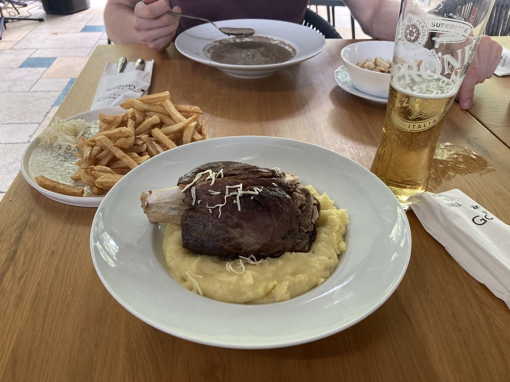
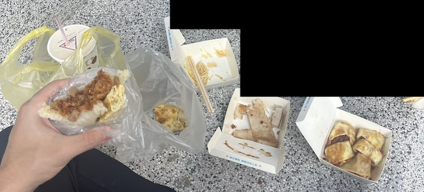
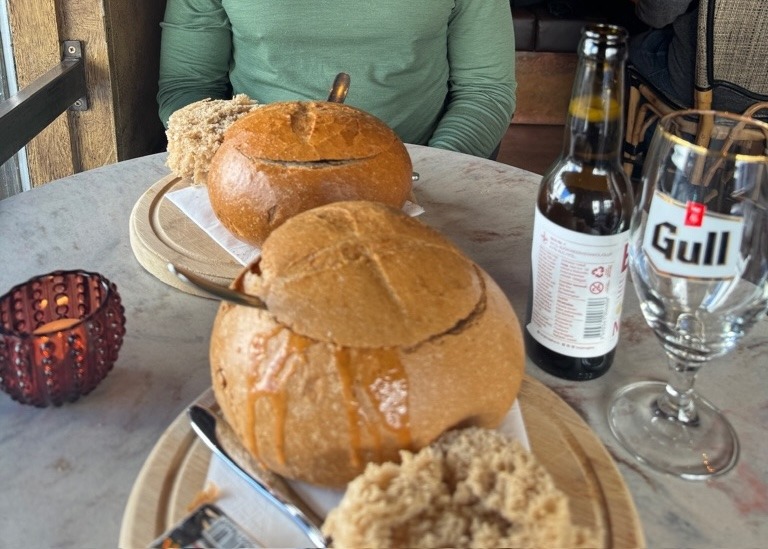

More bang for the buck often leads to a better time. (All dollar amounts are in USD.)
I've only been to two cheap destinations: Romania and Taiwan.
I've been to three expensive destinations: French Riviera, Iceland, and New York (I, II, III).
There's one rule and one heuristic I use when choosing where to travel:

That's it. Rule 1 removes all irrelevant questions that come after and Heuristic 1 helps to pare down the choices when the decision is difficult.
I'd argue a lot of people travel to get away from their everyday life and experience something new, and since most people don't live like kings, living like a king would be something new and a reason why people travel. QED.
Traveling to a cheap destination (CD) unlocks purchasing power that you can't get anywhere else. Sure, you can splurge on a nice dinner in your home city, but it sure doesn't feel the same as eating the same quality of food for a fraction of the price while traveling.

Everything is more accessible when traveling to a CD. A few examples:
The other side of your coin is depressing: you (probably) live a quality of life worse than that of your home when going to expensive destinations, because, well, everything is more expensive! Combine that with constantly questioning if you should buy this or that because of how expensive it is and that makes for a not-great vacation. This worry is eliminated when traveling to cheap destinations!
Markets give us a lot of information, but they're flawed in the sense that they rely on taste and not everyone has the same taste (or good taste).
Taiwan was cheap, but freaking awesome. Romania was cheap, but freaking awesome. Iceland was expensive and pretty awesome. The French Riviera was expensive and pretty awesome.

So why are cheap destinations cheap? Wouldn't market forces cause them to become more expensive? Not necessarily, for a few reasons: